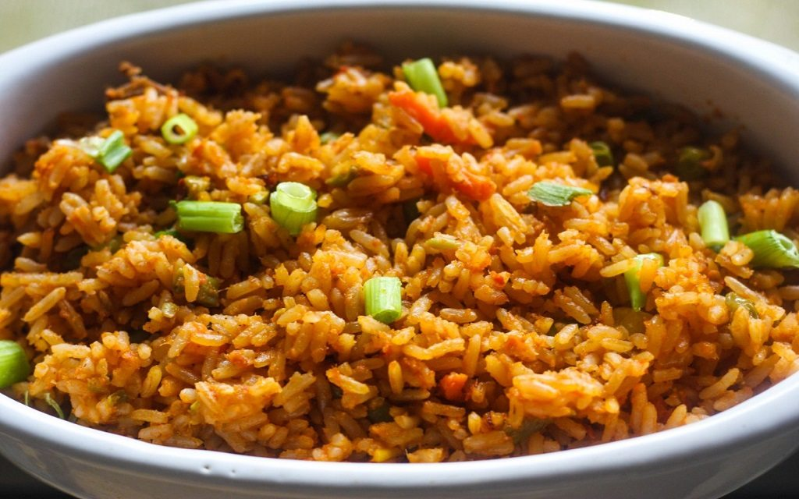

Jollof rice

Jollof a continental food served and eaten in all places.
A delicious sumptuous meal and yet can be very disappointing if cooking steps are not taken properly.
In Ghana, in as much as it is eaten at home, it is regarded as an official meal thus mostly prepared on festive holidays and for the welcoming of guest.
The day it is prepared at the home of some Ghanaian children is considered a very happy day for them.
Ingredients
- One and a quater cups of white rice
- One pound of boneless and skinless chicken breast
- Three cups of chicken soup
- One medium size onion, chopped
- Two teespoons of vegetable oil
- 6-ounce of tomato paste
Steps
- In saucepan, fry rice and the onion in oil, until onions turn translucent
- Cut the chicken into small cubes and add to the micture
- Add the tomato paste and the chicken soup in succession, simmer the mixture
- Cook pan and reduce the heat
- Cook in low heat until rice is tender, the liqiud has been absorbed, and the chicken is fully cooked, about 25 minutes
Bon appetite
Return to home page